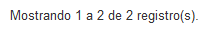

Suporte ao Usuário
Para apresentar a tela Pesquisar Demandas de Suporte, clique na opção Suporte ao Usuário no menu do sistema SGDoc:
Menu do sistema SGDoc
A tela Pesquisar Demandas de Suporte será apresentada:
Tela Pesquisar Demandas de Suporte
Informações para Pesquisar Demandas de Suporte:
Artefato: |
À qual artefato foi gerada a Demanda. |
Data: |
Data de abertura da Demanda |
Assunto: |
Assunto relacionado ao artefato da Demanda. |
Documento / Processo: |
Número da digital ou do processo. |
 Preenchendo a tela Pesquisar Demandas de Suporte!!
Preenchendo a tela Pesquisar Demandas de Suporte!!
 é apresentado um calendário para o preenchimento do campo (Veja Nota 1):
é apresentado um calendário para o preenchimento do campo (Veja Nota 1):Clicando no ícone Calendário
Selecionando a data para preenchimento do campo Data
Selecionando um assunto no campo Assunto
Assuntos para Processo |
Assuntos para Documentos |
Assuntos para Outros |
Desapensar |
Desapensar |
Restaurar Etiqueta |
Remover Peça |
Anexar |
Liberação de Lote de Etiqueta |
Anexar |
Apensar |
Treinamento |
Apensar |
Excluir Imagem |
Alteração de Perfil |
Desmembramento de peças |
Excluir Comentário |
Excluir acesso |
Excluir Imagem |
Excluir Despacho |
Inclusão de Usuário |
Excluir Comentário |
Anexação Incorreta de documento |
Sugestão e/ ou Reclamação. |
Excluir Despacho |
Alterar Comentário |
|
Anexação Incorreta de processo |
Alterar Despacho |
|
Alterar Comentário |
Alterar Grau de Acesso |
|
Alterar Despacho |
||
Alterar Grau de Acesso |
Lista de assuntos disponíveis para cada artefato

Preenchendo o campo Documento / Processo
Tela Pesquisar Demandas de Suporte após efetuar pesquisa
 Formas de "navegar" pelas demandas de suporte!
Formas de "navegar" pelas demandas de suporte!



IMPORTANTE!!
 Nota 1:
Nota 1:
Nos campos de Data, ao clicar no ícone  o sistema apresenta um calendário:
o sistema apresenta um calendário:

Calendário
O calendário é exibido apresentando o mês e ano atuais  , além do dia corrente
, além do dia corrente  . Utilize as setinhas
. Utilize as setinhas  para navegar entre os meses (anteriores e posteriores) e clique no dia desejado
para navegar entre os meses (anteriores e posteriores) e clique no dia desejado  para que o campo de data seja preenchido:
para que o campo de data seja preenchido:

Preenchimento do campo de Data
Created with the Personal Edition of HelpNDoc: Full-featured EBook editor